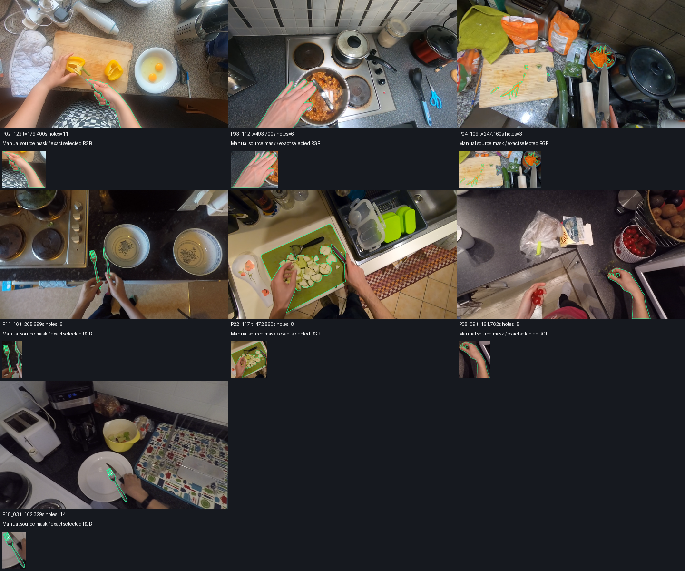

Latest full dataset-v2 retraining: results, numerical readiness and remaining sequence/reference limits.
Track 1 remains open. Track 2 remains on hold. Independent scientific acceptance is pending.
28,591 native RGB frames in 267 selected clips, seven participants. RGB bytes: 177,858,893,696; total product estimate: 207,134,838,850 / 250,000,000,000 bytes. NPY images and Parquet metadata have no compression.
Geometry observations: 480,288; source masks with holes: 805; partial geometry evidence: 34,709. Partial evidence does not become complete ground truth. Labels are retrospective and have no certified online availability.
Actual dataset product: 207.330 GB / 250 GB, including original sources, native RGB partition and canonical/v2. Historical work caches and model releases are separate from this product.
All 267 selected clips contain every indexed native frame in their half-open interval. All 21 independent software-decode samples matched stored RGB exactly. All RGB shard hashes passed.
Corrected appearance: 448 observations, 109 with holes, frozen MobileNetV3-Small on Metal; separate source-masked object and context embeddings. Each 128D PCA uses 320 training observations. Full-timeline retraining and independent identity evaluation remain pending.
Periodic unmapping reduced sampled aggregate RSS to a post-fix peak of 4.95 GiB. The initial guard stop at 20.57 GiB is retained in the resource ledger; no OOM was observed.

This AI visual screen is limited to these seven examples.
Appearance pilot · Actual capacity · RGB parity · Clip coverage · Frozen baseline integrity
| Split | Cohort | Variant | Masks | Hole masks | IoU | BF2 |
|---|---|---|---|---|---|---|
| train | matched_manual | legacy_role_mismatch | 320 | 24 | 0.9737078682202671 | 0.8570915398562695 |
| train | matched_manual | geometry_contract_v2 | 320 | 24 | 0.9738049845514043 | 0.8582794627051914 |
| train | additional_hole_manual | legacy_role_mismatch | 125 | 125 | 0.9255135555134861 | 0.6676236319677498 |
| train | additional_hole_manual | geometry_contract_v2 | 125 | 125 | 0.9263341150487439 | 0.6771359987425177 |
| validation | matched_manual | legacy_role_mismatch | 128 | 6 | 0.9793441754980388 | 0.8845658868552662 |
| validation | matched_manual | geometry_contract_v2 | 128 | 6 | 0.9793595388644605 | 0.8851499426877092 |
| validation | additional_hole_manual | legacy_role_mismatch | 48 | 48 | 0.9573187669346676 | 0.7787948921350725 |
| validation | additional_hole_manual | geometry_contract_v2 | 48 | 48 | 0.9581329416449679 | 0.7861829911074439 |
Matched means use the same manual-mask cohort as historical architecture probes; additional hole examples are a separate cohort. These measure reconstruction from the supplied contour. Numerical release checks and file hashes passed; independent motion/contact/identity references remain absent.
Detailed geometry results · Partition · Label rebuild · Checks
The old geometry-dependent appearance, compound, calibration and certificate evidence must be rebuilt with the new schema before promotion. Current corrected spatial pilot fits are not a new full-timeline temporal release.